Digital Image Processing — Semester Project Report
We present a system that re-renders a content photograph with the mood (colour palette, tone, lighting and atmosphere) of a reference photograph while preserving the content's structure. The deep learning core is a pretrained VGG-19 feature space used in two ways: optimisation-based neural transfer (Gatys et al.) and fast feed-forward Adaptive Instance Normalisation (AdaIN, Huang & Belongie). Plain neural style transfer paints textures onto photographs, which conflicts with the goal of a photographic result. We therefore add a mood layer built from classical DIP tools: luminance-preserving transfer modes in CIELab, a photorealistic refinement step based on a colour guided filter that uses the content image as guide, mood descriptors (Lab k-means palette, brightness, contrast, saturation, correlated colour temperature), presets, multi-reference blending, post-processing and an optional semantic (DeepLabV3) foreground/background mode. Classical baselines (Reinhard colour transfer, CDF histogram matching) are implemented from scratch. We evaluate five methods on 10 content images × 6 moods with SSIM, LPIPS, Lab statistics, Wasserstein and Bhattacharyya histogram distances, CLIP similarity and runtime. Our default pipeline (AdaIN + colour-only mode + guided-filter refinement) preserves structure almost perfectly (luminance SSIM 0.996, LPIPS 0.006, vs. 0.331 / 0.477 for plain AdaIN). It halves the colour-statistics distance to the reference and matches CLIP mood descriptions as well as Reinhard, at ~0.1 s per 512 px image on a laptop GPU (≈200× faster than Gatys). A colour+tone mode trades some SSIM for the strongest text-described mood match of all methods (ΔCLIP 0.108).
Photographers and film colourists talk about the mood or atmosphere of an image: the warm, low sun of golden hour, the cold blue of dusk, the low-contrast greys of fog, the saturated magenta–cyan of neon night, the faded, shifted colours of old film stock, or the dark, high-contrast look of film noir. These impressions are carried mostly by global photometric properties:
Artistic style, in contrast, also includes texture: brush strokes, canvas, patterns. For photographs, transferring texture is usually undesirable: the output should still look like a photograph.
Given a content image A and a mood/reference image B, produce an image that
Statistical colour transfer. Reinhard et al. [1] transfer colour by matching the mean and standard deviation of each channel in the decorrelated lαβ opponent colour space. Histogram specification (matching full channel distributions via their cumulative distribution functions) is a textbook DIP technique [16]. Pitié et al. [22] extended this to N-dimensional PDF transfer. These methods are fast and structure-preserving but blind to spatial and semantic content.
Optimisation-based neural style transfer. Gatys et al. [2] showed that deep features of an ImageNet-trained VGG network [8] separate content (feature maps of a deep layer) from style (Gram matrices of feature maps across layers). An output image is obtained by optimising its pixels to match both. Li et al. [19] showed that Gram matching is equivalent to minimising a Maximum Mean Discrepancy between feature distributions, which motivates matching simpler feature statistics.
Fast feed-forward transfer. Johnson et al. [4] trained a feed-forward network per style with perceptual losses for real-time transfer. Ulyanov et al. [20] showed that instance normalisation improves stylisation. Huang & Belongie [3] proposed Adaptive Instance Normalisation (AdaIN): aligning the channel-wise mean and variance of content features to those of the style features, followed by a learned decoder. This gives arbitrary style transfer in a single forward pass.
Photorealistic style transfer. Luan et al. [5] (Deep Photo Style Transfer) add a photorealism regulariser that constrains the transformation to be locally affine in colour space (based on the Matting Laplacian), plus semantic segmentation to avoid content mismatches. Li et al. [6] (PhotoWCT) replace the decoder's upsampling with unpooling and add a closed-form smoothing step that makes pixels with similar content colours receive similar outputs. Yoo et al. [25] (WCT²) use wavelet pooling. The guided filter of He et al. [7] is an efficient, edge-preserving local linear model and is closely related to the matting Laplacian used by Luan et al. Our refinement step borrows this idea.
| Concept | Where it is used |
|---|---|
| Colour spaces (RGB, CIELab, YCbCr, HSV) | Reinhard and histogram transfer in Lab; transfer modes split L* (structure) from a, b (colour); YCbCr helpers; HSV saturation in the descriptor |
| Histograms, CDFs, histogram specification | Histogram-matching baseline; tone-only mode (tone curve = CDF matching of L*); histogram refinement post-process; Wasserstein/Bhattacharyya metrics |
| First/second-order statistics (mean, std, covariance) | Reinhard; AdaIN (on deep features); guided filter (local mean/covariance); Lab-statistics metric |
| Convolution | VGG-19 encoder/decoder (3×3 convs, reflection padding); Gaussian blur in unsharp masking and film grain; box filters |
| Spatial filtering, edge-preserving smoothing | Guided filter (photorealistic refinement, semantic-mask refinement); bilateral filter (option and post-process) |
| Sharpening | Unsharp masking post-process |
| Normalisation statistics | Instance normalisation / AdaIN; ImageNet normalisation for torchvision VGG |
| Resampling | Aspect-preserving resize (INTER_AREA when downsampling for anti-aliasing), reflection padding to multiples of 8 |
| Clustering | k-means in Lab for the dominant palette |
| Colorimetry | sRGB → linear → XYZ → (x, y) chromaticity → McCamy correlated colour temperature |
Colour spaces. RGB channels are highly correlated: a brightness change moves all three. CIELab separates lightness L* ∈ [0, 100] from two opponent chroma axes, a* (green–red) and b* (blue–yellow). It is approximately perceptually uniform, so Euclidean distances roughly follow perceived differences. This gives two properties we rely on: (i) per-channel statistics can be matched independently without creating colour casts, and (ii) structure (edges, texture) lives mostly in L, so replacing a, b* changes colour while keeping the structure.
Histogram specification. For a channel with CDF T(r) and a reference with CDF G(z), the mapping z = G⁻¹(T(r)) produces an output whose histogram approximates the reference's. Our implementation uses 1024-bin CDFs with linear interpolation, and drops flat CDF segments so that the inverse is well defined.
Guided filter [7]. For guide I and input p, the output in every window ω_k of radius r is modelled as q_i = a_kᵀ I_i + b_k. Least-squares fitting with regulariser ε gives
a_k = (Σ_k + εU)⁻¹ · cov_k(I, p) b_k = mean_k(p) − a_kᵀ · mean_k(I)
q_i = mean_{k∋i}(a_k)ᵀ · I_i + mean_{k∋i}(b_k)
where Σ_k is the 3×3 covariance of the colour guide in the window. All terms are box-filter means, so the cost is O(1) per pixel, independent of r. Because ∇q ≈ a ∇I, the output can only have edges where the guide has edges. This is exactly the property needed to remove hallucinated textures from a stylised image while keeping the content's edges.
src/classical.py)out_c = (x_c − μ_c^A)·σ_c^B/σ_c^A + μ_c^B for c ∈ {L, a, b}.Both expose a strength α (pixel blend; α = 0 returns the content exactly, which the tests verify).
src/gatys.py)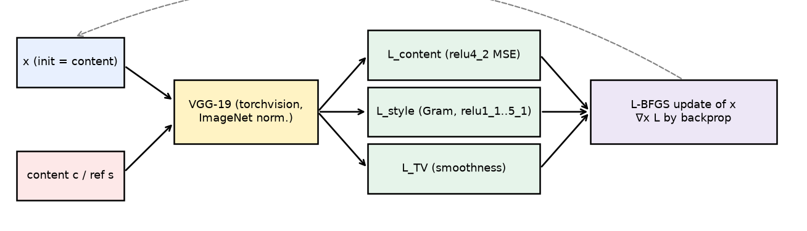
With F_l(x) the VGG-19 activations at layer l and G_l = F_l F_lᵀ / (C_l H_l W_l):
L_content = mean( (F_relu4_2(x) − F_relu4_2(c))² )
L_style = Σ_{l ∈ {relu1_1, relu2_1, relu3_1, relu4_1, relu5_1}} (1/5) · mean( (G_l(x) − G_l(s))² )
L_TV = mean|x_{i+1,j} − x_{i,j}| + mean|x_{i,j+1} − x_{i,j}|
L = w_c·L_content + w_s·L_style + w_tv·L_TV, w_c = 1, w_s = 1e5, w_tv = 1e-2
The image x is initialised from the content image, so the result stays photographic and converges faster. It is optimised with L-BFGS [24] (or Adam). Max-pooling is replaced by average pooling, as suggested by Gatys et al. The VGG is torchvision's ImageNet VGG-19 with ImageNet mean/std normalisation.
src/adain.py, src/models.py)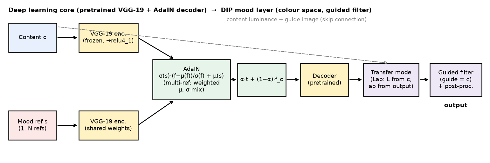
f_c = E(c), f_s = E(s) E = normalised VGG-19 up to relu4_1 (frozen)
AdaIN(x, y) = σ(y) · (x − μ(x)) / σ(x) + μ(y) (per channel, spatial statistics)
t = α · AdaIN(f_c, f_s) + (1 − α) · f_c (strength α ∈ [0, 1])
output = D(t) D = pretrained decoder (mirror of E)
src/mood.py)Transfer modes (applicable to the output of any method), in CIELab:
| Mode | L* (structure, brightness) | a, b (colour) |
|---|---|---|
full |
from transfer output | from transfer output |
color (default for AdaIN + mood) |
content | transfer output (guided-filtered) |
tone |
content L* remapped by a global monotone tone curve towards the output's L* distribution (CDF matching) | content (saturation-compensated) |
color_tone |
tone curve as above | transfer output (guided-filtered) |
A global monotone curve preserves pixel ordering, so it cannot create or move edges. This lets the tone modes transfer brightness and contrast without touching structure.
Photorealistic refinement. The AdaIN output is filtered with the colour guided filter, using the content image as guide (r = long side / 16, i.e. 32 px at 512 px, ε = 10⁻²; chosen empirically, Section 6). Within each window the refined output is a locally affine function of the content colours. This is the same assumption as Luan et al.'s photorealism regulariser [5] and PhotoWCT's smoothing step [6], but computed in closed form in O(N). AdaIN's hallucinated textures are not explained by the guide, so they are averaged away. Edges present in the content are kept.
Mood descriptor. A five-colour palette from k-means in Lab (with share-proportional swatches), mean L* (brightness), std L* (RMS contrast), mean HSV saturation, Hasler–Süsstrunk colourfulness [18], and the correlated colour temperature of the mean colour via McCamy's formula [17] (CCT = 449n³ + 3525n² + 6823.3n + 5520.33, n = (x − 0.3320)/(0.1858 − y)), combined into a rule-based label such as "warm, mid-key, vivid".
Presets. Six named moods in data/moods/: Golden Hour, Cold Blue Dusk, Foggy/Misty, Neon Night,
Vintage Film and Dark Noir.
Post-processing (sliders, all off by default): chroma histogram refinement towards the reference, bilateral edge-preserving smoothing, unsharp-mask sharpening, luminance film grain weighted towards mid-tones, and a radial vignette.
Semantic-aware transfer (stretch goal). A pretrained DeepLabV3-MobileNetV3 [13, 14] gives P(background). Its complement (a soft foreground-object mask) is refined with a guided filter and used to blend a full-strength mood on the background with a weaker (α = 0.35) or different mood on the foreground objects.
scripts/fetch_commons.py keeps only
CC0/PD/CC BY/CC BY-SA files) and list them in data/*/CREDITS.md. Images were resized to ≤1600 px.
One extra public-domain NASA image (scikit-image's astronaut) is used only for the semantic demo,
because the landscape set contains no PASCAL-VOC objects.| Component | Weights | Input preprocessing |
|---|---|---|
| AdaIN encoder | normalised VGG-19 (vgg_normalised.pth, naoto0804/pytorch-AdaIN), truncated at relu4_1 |
raw RGB in [0, 1]; the first 1×1 conv performs the Caffe BGR/mean preprocessing |
| AdaIN decoder | decoder.pth (same release; trained by its author on MS-COCO [21] content + WikiArt style) |
relu4_1 features → RGB |
| Gatys | torchvision VGG-19 IMAGENET1K_V1 (max-pool → avg-pool) |
ImageNet mean/std normalisation |
| LPIPS metric | AlexNet + LPIPS v0.1 linear layers | [−1, 1] |
| CLIP metric | open_clip ViT-B/32, laion2b_s34b_b79k [11, 12] |
CLIP preprocessing |
| Semantic mode | torchvision DeepLabV3-MobileNetV3-Large (VOC labels) [13, 14, 23] | ImageNet normalisation |
Compatibility check. With α = 0 the AdaIN path computes decoder(encoder(content)). The result
clearly reproduces the content (Figure "alpha sweep", first column), which confirms that the encoder and
decoder match. A mismatched encoder (e.g. torchvision VGG with ImageNet normalisation) produces
unrecognisable output. Reconstruction is approximate: SSIM to the content was 0.60 at 512 px and
0.29–0.71 at 128–256 px, depending on image detail, because the decoder was trained with content+style
losses rather than for exact reconstruction, and relu4_1 has 1/8 resolution.
| Setting | Value |
|---|---|
| Working size (long side) | 512 px on GPU/MPS (default 384 px on CPU) |
| Gatys | w_c = 1, w_s = 1e5, w_tv = 1e-2, L-BFGS (history 50), 300 function evaluations, init = content, 384 px |
| AdaIN | α = 1 (evaluation), statistics at relu4_1, ε = 1e-5 in σ |
| Guided filter (refinement) | colour guide = content, r = long side / 16 (32 px at 512 px), ε = 1e-2 |
| Transfer mode for "AdaIN + mood" | color (default); color_tone and tone shown in the mode study |
| Histogram matching | 1024 bins, Lab (evaluation), RGB (failure analysis) |
| Palette | k-means, k = 5, Lab, 160 px thumbnail, k-means++ init, 4 attempts |
| Seeds | Python/NumPy/PyTorch seed 0 (set_seed) |
Gatys is ~100× slower than the feed-forward methods, so it was run on a documented subset: the first three content images in alphabetical order (arezzo_piazza, autumn_hills, caesars_palace) × all six moods = 18 pairs, at 384 px, 300 L-BFGS function evaluations. All other methods run on the full 10 × 6 = 60 pairs at 512 px. To make the comparison fair, the results table also reports every method restricted to the same 18 pairs.
Apple M5 laptop with 16 GB unified memory, PyTorch 2.15.0 using the MPS (Metal) GPU backend; no CUDA GPU was available. CPU timings use the same machine. Python 3.13.5, torchvision 0.29.2, OpenCV 5.1, scikit-image 0.26, lpips 0.1.4, open_clip 4.2.2, Gradio 6.32. Timings are wall-clock with device synchronisation, after a warm-up run, and include pre-/post-processing at the working size but not disk I/O.
All numbers and figures in this section come from python scripts/run_experiments.py --speed. The raw
per-pair values are in results/metrics.csv (378 rows) and the aggregates in
results/metrics_summary.{csv,md}, results/speed.csv, results/gf_ablation.json and
results/refinement_ssim.json.
scripts/run_experiments.py).Table 1 — Full grid: 10 contents × 6 moods = 60 pairs per method, 512 px, Apple MPS (mean ± std).
| Method | SSIM ↑ | LPIPS ↓ | Lab stat dist ↓ | Wasserstein ↓ | Bhattacharyya ↓ | CLIP img ↑ | ΔCLIP img ↑ | ΔCLIP text ↑ | s/img |
|---|---|---|---|---|---|---|---|---|---|
| Identity (content) | 1.000 ± 0.000 | 0.000 ± 0.000 | 50.1 ± 19.0 | 18.73 ± 8.09 | 0.801 ± 0.127 | 0.325 ± 0.088 | 0.000 | 0.000 | – |
| Reinhard | 0.809 ± 0.182 | 0.114 ± 0.091 | 6.9 ± 5.6 | 4.28 ± 2.50 | 0.494 ± 0.150 | 0.397 ± 0.086 | 0.071 ± 0.061 | 0.089 ± 0.051 | 0.010 |
| Histogram (Lab) | 0.706 ± 0.227 | 0.270 ± 0.182 | 8.2 ± 9.4 | 2.66 ± 2.84 | 0.433 ± 0.168 | 0.394 ± 0.079 | 0.069 ± 0.048 | 0.083 ± 0.045 | 0.048 |
| AdaIN (plain) | 0.331 ± 0.128 | 0.477 ± 0.122 | 13.3 ± 5.7 | 5.43 ± 2.42 | 0.444 ± 0.117 | 0.453 ± 0.079 | 0.128 ± 0.091 | 0.096 ± 0.062 | 0.122 |
| AdaIN + mood (ours, default: color mode + GF) | 0.996 ± 0.004 | 0.006 ± 0.006 | 26.8 ± 11.2 | 9.57 ± 3.60 | 0.598 ± 0.097 | 0.376 ± 0.085 | 0.051 ± 0.048 | 0.086 ± 0.036 | 0.139 |
| AdaIN + mood (ours, color+tone mode) | 0.757 ± 0.248 | 0.192 ± 0.155 | 16.8 ± 6.0 | 6.27 ± 2.62 | 0.528 ± 0.148 | 0.391 ± 0.077 | 0.066 ± 0.057 | 0.108 ± 0.050 | 0.123 |
Table 2 — Gatys subset: 3 contents (arezzo_piazza, autumn_hills, caesars_palace) × 6 moods = 18 pairs. Gatys ran at 384 px with 300 L-BFGS evaluations; the other methods ran at 512 px on the same 18 pairs.
| Method (same 18 pairs) | SSIM ↑ | LPIPS ↓ | Lab stat dist ↓ | Wasserstein ↓ | ΔCLIP img ↑ | ΔCLIP text ↑ | s/img |
|---|---|---|---|---|---|---|---|
| Reinhard | 0.796 ± 0.196 | 0.119 ± 0.096 | 6.7 ± 5.6 | 4.18 ± 2.48 | 0.076 ± 0.069 | 0.089 ± 0.055 | 0.011 |
| Histogram (Lab) | 0.697 ± 0.252 | 0.269 ± 0.201 | 7.0 ± 6.5 | 2.18 ± 1.95 | 0.086 ± 0.059 | 0.094 ± 0.053 | 0.046 |
| AdaIN | 0.339 ± 0.120 | 0.458 ± 0.126 | 13.6 ± 5.3 | 5.50 ± 2.31 | 0.143 ± 0.094 | 0.108 ± 0.059 | 0.121 |
| AdaIN + mood (color) | 0.998 ± 0.003 | 0.003 ± 0.003 | 29.2 ± 12.7 | 10.26 ± 4.21 | 0.058 ± 0.049 | 0.088 ± 0.029 | 0.142 |
| AdaIN + mood (color+tone) | 0.753 ± 0.271 | 0.185 ± 0.177 | 15.8 ± 5.2 | 6.13 ± 2.47 | 0.079 ± 0.061 | 0.112 ± 0.041 | 0.119 |
| Gatys (384 px, 300 it.) | 0.638 ± 0.080 | 0.265 ± 0.071 | 21.6 ± 12.4 | 7.71 ± 3.88 | 0.058 ± 0.067 | 0.072 ± 0.040 | 22.2 |
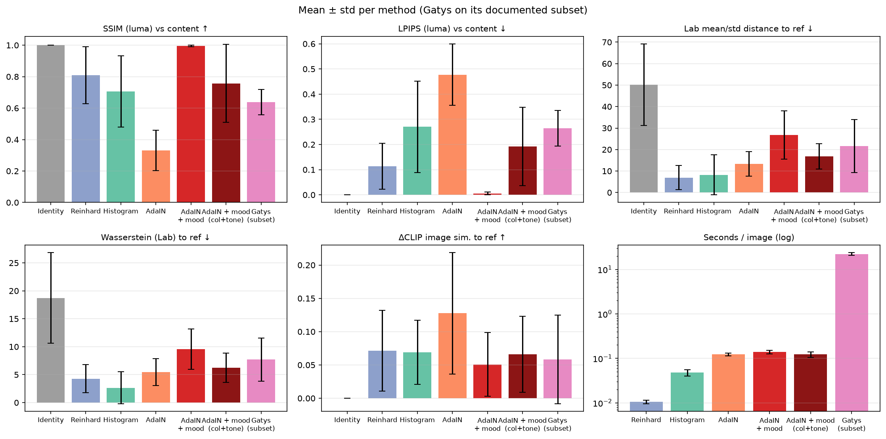
Figure 1 — Mean ± std per method (Gatys on its subset).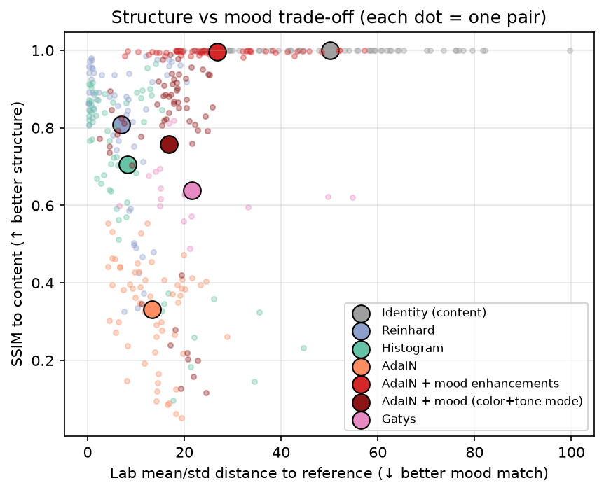
Figure 2 — Structure (SSIM) vs. colour-statistics match (Lab distance); each small dot is one pair.Table 3 — Speed (seconds per image, mean of 3 pairs, after warm-up; results/speed.csv).
| Method | Apple M5 CPU | Apple M5 GPU (MPS) |
|---|---|---|
| Reinhard (512 px) | 0.010 | 0.011 |
| Histogram, Lab (512 px) | 0.042 | 0.042 |
| AdaIN (512 px) | 0.546 | 0.091 |
| AdaIN + mood, color (512 px) | 0.391 | 0.103 |
| AdaIN + mood, color+tone (512 px) | 0.401 | 0.117 |
| Gatys (384 px, 300 L-BFGS evals) | 57.9 | 20.6 |
No CUDA GPU was available, so "GPU" means Apple MPS. The classical methods run in NumPy/OpenCV on the CPU in both columns. On CPU, AdaIN + mood was measured slightly faster than plain AdaIN; the plain-AdaIN CPU number has a large spread (± 0.14 s) and the difference is within noise.
Table 4 — Per-mood view (mean over the 10 contents).
| Mood | SSIM ours (color) | SSIM ours (color+tone) | SSIM Reinhard | ΔCLIP text ours (color) | ΔCLIP text ours (color+tone) | ΔCLIP text Reinhard | ΔCLIP text AdaIN |
|---|---|---|---|---|---|---|---|
| Cold Blue Dusk | 0.997 | 0.880 | 0.928 | 0.076 | 0.076 | 0.069 | 0.058 |
| Dark Noir | 0.997 | 0.231 | 0.449 | 0.110 | 0.193 | 0.177 | 0.175 |
| Foggy / Misty | 0.998 | 0.792 | 0.879 | 0.057 | 0.080 | 0.065 | 0.060 |
| Golden Hour | 0.992 | 0.857 | 0.932 | 0.108 | 0.103 | 0.078 | 0.125 |
| Neon Night | 0.995 | 0.881 | 0.850 | 0.085 | 0.097 | 0.098 | 0.120 |
| Vintage Film | 0.997 | 0.903 | 0.817 | 0.082 | 0.099 | 0.045 | 0.036 |
Reading the numbers.
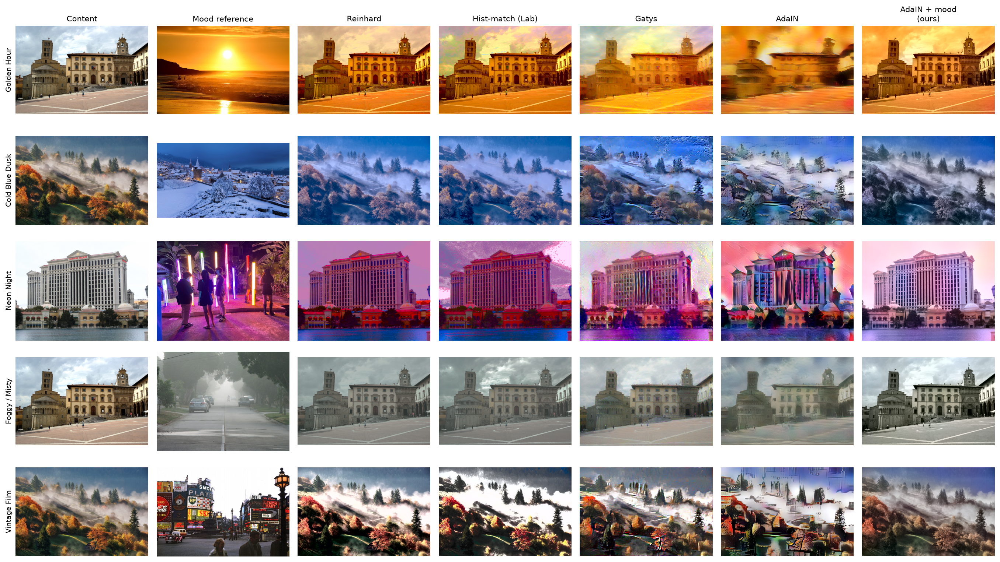
Figure 3 — Content | reference | Reinhard | histogram matching (Lab) | Gatys | AdaIN | AdaIN + mood (ours, default). Rows were picked from the Gatys subset so that every column is populated. All 60 × 6 outputs are inresults/outputs/<method>/.
The classical methods colour the whole image with the reference's global statistics. They are often convincing (golden hour), but histogram matching creates speckle and posterised skies (neon, vintage rows), and both spread colours with no regard for scene content. Gatys gives the right colours but with blotchy, painterly texture. Plain AdaIN produces the strongest mood but warps buildings and trees. Ours keeps every edge of the content and moves the colour palette clearly towards the reference.
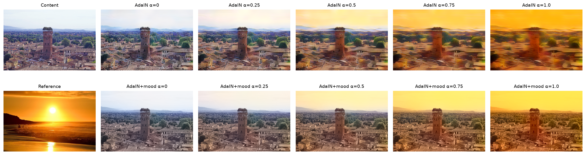
Figure 4 — α = 0, 0.25, 0.5, 0.75, 1 for plain AdaIN (top) and AdaIN + mood (bottom). At α = 0 the AdaIN row shows the decoder's reconstruction of the content (encoder/decoder compatibility check).α interpolates smoothly in feature space. In plain AdaIN, structure degrades as α grows; in our pipeline only the colour changes, and the structure is identical for every α.
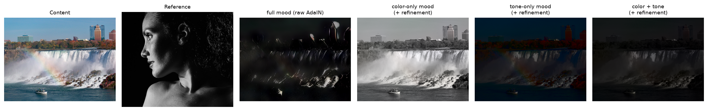
Figure 5 — Full / colour-only / tone-only / colour+tone with the Dark Noir reference.With a noir reference, the colour-only mode removes colour (the reference's chroma is ≈ 0) but keeps the bright daylight luminance. The result is a clean black-and-white photo, but not "dark". The tone-only mode keeps the original colours and applies the noir tone curve (dark, high contrast). The colour+tone mode combines both and is the closest to the noir mood without the hallucinated shapes of raw AdaIN. This is why the mode is user-selectable.
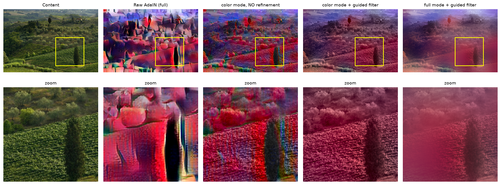
Figure 6 — Raw AdaIN, colour mode without refinement, colour mode + guided filter (ours), and full mode + guided filter, with zoomed crops.Luminance SSIM to the content for this example (results/refinement_ssim.json): raw AdaIN 0.222,
colour mode without refinement 0.980, colour mode + guided filter 0.994, full mode + guided
filter 0.737. Keeping L* removes the geometric distortion. The guided filter then removes the
colour speckle that AdaIN's texture leaves in the chroma channels. Applying the guided filter to the
full AdaIN output removes texture but cannot undo the low-frequency warping. Both steps are needed.
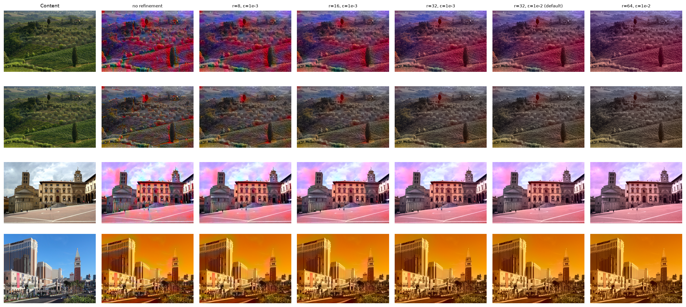
Figure 7 — Guided-filter radius/ε ablation (colour mode) on four pairs, with radii scaled to 512 px.| Setting | mean SSIM to content | high-frequency chroma energy ↓ |
|---|---|---|
| no refinement | 0.987 | 4.41 |
| r = 8, ε = 1e-3 | 0.993 | 2.14 |
| r = 16, ε = 1e-3 | 0.994 | 2.17 |
| r = 32, ε = 1e-3 | 0.995 | 2.18 |
| r = 32, ε = 1e-2 (default) | 0.995 | 1.96 |
| r = 64, ε = 1e-2 | 0.995 | 1.91 |
Any refinement halves the high-frequency chroma noise. Larger windows additionally remove the low-frequency colour blotches visible in Figure 7 (e.g. pink/blue patches in the Arezzo sky), which the high-frequency measure does not capture. We chose r = 32 px (at 512 px), ε = 1e-2 visually as the best compromise. r = 64 scores about the same; we did not observe a clear visual gain, and much larger windows let colour bleed across boundaries (failure case 4).
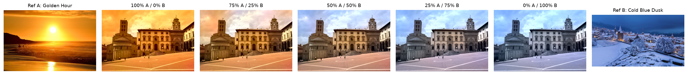
Figure 8 — Mixing Golden Hour and Cold Blue Dusk statistics with weights 100/0 … 0/100.The transition is smooth and passes through plausible intermediate moods (a warm–cool "pastel dusk" at 50/50), because the weighted statistics move continuously in feature space.
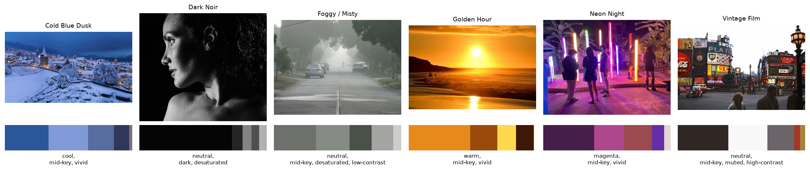
Figure 9 — The six presets, their k-means Lab palettes (widths ∝ share) and rule-based labels.The labels match intuition: Cold Blue Dusk = "cool, mid-key, vivid"; Dark Noir = "neutral, dark,
desaturated"; Foggy = "neutral, mid-key, desaturated, low-contrast"; Golden Hour = "warm, mid-key,
vivid"; Neon Night = "magenta, mid-key, vivid"; Vintage Film = "neutral, mid-key, muted,
high-contrast". Full values are in results/mood_descriptors.json. A first version labelled neon
"warm" because its warmth score mixed a* (red–green) and b* (yellow–blue); the rule now separates
magenta casts (high a, low b) from warm light (high b*).
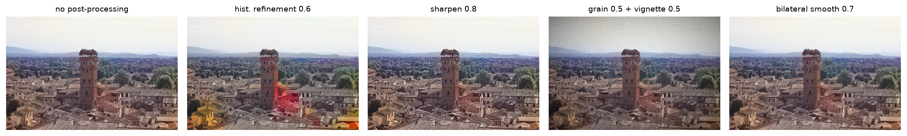
Figure 10 — Optional post-processing on an AdaIN + mood result (Vintage Film reference).Grain + vignette gives a convincing "film" look, and sharpening restores a little crispness lost to the decoder. Chroma histogram refinement is risky: at 0.6 it creates saturated red/yellow patches, because CDF matching maps the content's chroma distribution onto the reference's long tail of saturated sign colours. This is why all post-processing is off by default and exposed as sliders.
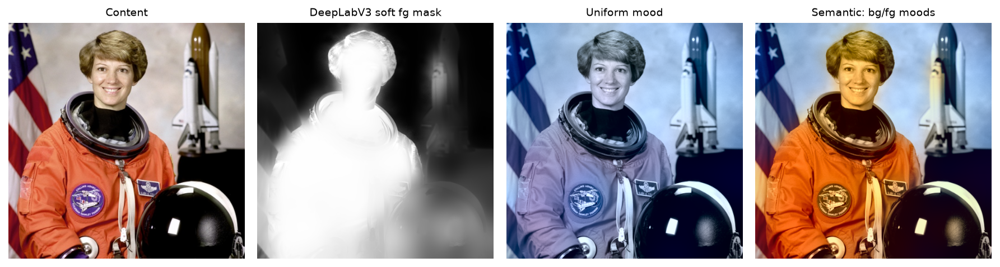
Figure 11 — DeepLabV3 foreground mask (refined with a guided filter), uniform Cold Blue Dusk mood, and semantic transfer with blue dusk on the background and golden hour on the person.The stretch goal was implemented and works on images that contain PASCAL-VOC objects. None of our 10 landscape/city content images contain such objects (the predicted foreground fraction was 0 for all of them), so the demonstration uses the public-domain NASA astronaut image. A sky/ground split would need a model trained with a "sky" class (e.g. ADE20K); VOC has none.
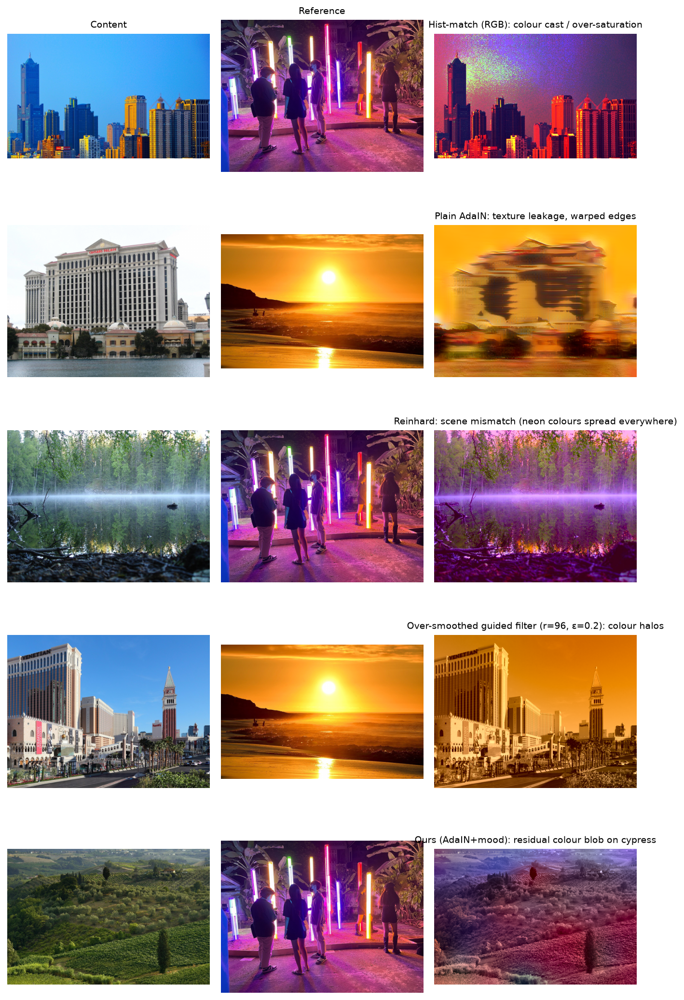
Figure 12 — Failure cases.Mood transfer is image manipulation. It can make a real scene look more dramatic, gloomier or more
idyllic than it was, which matters in journalism, real-estate and tourism advertising, legal evidence
and social media. Edited images should be disclosed as such. Our tool keeps no data and runs locally.
All images used here are freely licensed and credited (data/*/CREDITS.md), and the pretrained models are
used under their respective licences.
We built a complete mood-transfer system whose core is deep learning (pretrained VGG-19 with Gatys optimisation and AdaIN) and whose output stays photographic thanks to a mood layer grounded in classical DIP: colour-space separation of structure and chroma, an edge-preserving guided filter that uses the content as guide, tone curves from histogram specification, and colour statistics for description and evaluation. On 60 content–mood pairs, plain neural transfer gave the strongest texture/style change but destroyed structure. The classical methods matched global colour statistics best but ignore content. Our pipeline kept structure nearly perfectly while delivering a clearly visible, controllable mood shift, ~200× faster than Gatys.
Future work: (1) semantic correspondence between content and reference regions (sky↔sky, lights↔lights) with a segmentation model that has a sky class; (2) a decoder trained specifically for photorealism (e.g. WCT² [25] or PhotoWCT [6] unpooling); (3) automatic mode selection from the mood descriptor; (4) local relighting (shadows, light sources) for true time-of-day changes; (5) temporal consistency for video; (6) a user study with the template below.
Setup: 12 participants; 20 random content–mood pairs; for each pair show the content, the reference and the outputs of 4 methods (Reinhard, Gatys, AdaIN, ours) in random order, unlabeled.
Analysis: preference shares with 95 % binomial confidence intervals; Likert means with a Friedman test across methods and Wilcoxon post-hoc tests (Holm-corrected).
python -m venv .venv && .venv/bin/pip install -r requirements.txt
python scripts/download_weights.py
python scripts/run_experiments.py --speed # all tables and figures in this report
python scripts/export_pdf.py # this PDF
pytest -q